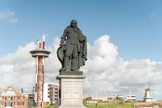
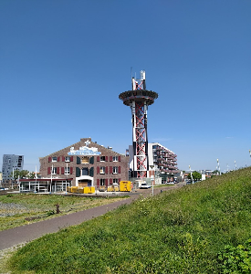

Vlissingen
- Vlissingen telt 45000 inwoners.
- Oppervlakte van 345 m2
- Zeeuwse taal
- Zeeuwse Bolus
- Eiland Walcheren
 Michiel de Ruyter begon zijn carrière als eenvoudig Zeeuws zeeman. Rond zijn dertigste jaar had hij zich opgewerkt tot kapitein, eerst in dienst van het koopmanshuis Lampsins varend, later als eigen meester. Vermogend geworden had hij de zee al vaarwel gezegd toen in 1652, bij het uitbreken van de Eerste Engelse Zeeoorlog, de Zeeuwse Admiraliteit met succes een beroep deed op zijn plichtsbesef en hij een belangrijk vlootvoogd werd.
 Arsenaal was een museum en maritieme attractie in Vlissingen. In dit museum stond het thema piraten centraal. In het Arsenaal was onder andere een Piratenpark en een zeeaquarium met haaien en roggen ingericht. Vanuit de 65 meter hoge uitkijktoren was er een uitzicht over Vlissingen en de Westerschelde.